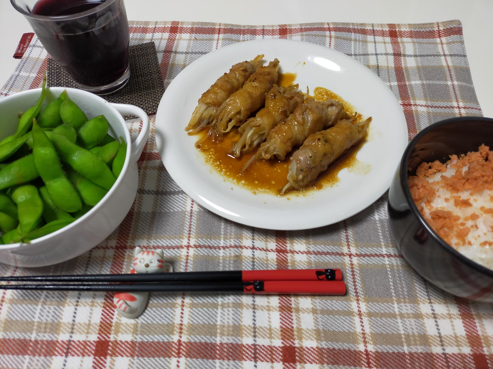

アサーティブとは？

今夜は、大切な人の誕生日。高級レストランを予約しプレゼントも用意しています。
ところが、定時直前に上司から「どうしても残業して欲しい」との依頼。
どう立ち回るのが「最適解」でしょうか？
と、いうのがグループワークの課題でした。
無難にまとまった意見としては上司に事情を説明し、残業のフォローを翌日以降にするよう調整するといったものでした。
個人的には、上司という他人に事情まで説明する義務は無いので、「あっ…突然おなか痛い」とかなんとか言って、意地でもレストランに向かう気がします。
待つ立場として考えたら当日「どうしても行けない」と言われたら、不機嫌丸出しになる気がしますしね…。
アサーティブコミュニケーションとは、自己主張しつつも、相手を尊重する理想的なコミュニケーションのことをいうようです。理想は理想、現実は利害関係が絡んでなかなか難しいと思いますが、たった数人であっても様々な考え方があり、考えさせられた午後でした。